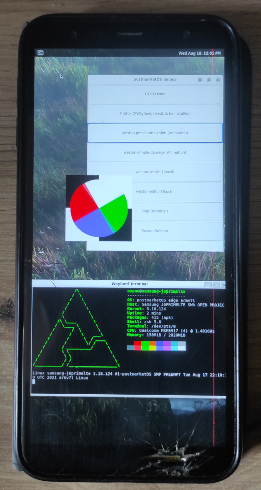

Samsung Galaxy J6 Plus (samsung-j6primelte)
Jump to navigation
Jump to search
|
 Galaxy J6+ running Weston | |
| Manufacturer | Samsung |
|---|---|
| Name | Galaxy J6+ |
| Codename | samsung-j6primelte |
| Released | 2018 |
| Category | testing |
| Original software | Android 8.1 (upgradable to Android 10) |
| Hardware | |
| Chipset | Qualcomm Snapdragon 425 (MSM8917) |
| CPU | Quad-core 1.4 GHz Cortex-A53 |
| GPU | Adreno 308 |
| Display | 720x1480 IPS |
| Storage | 32 or 64 GB |
| Memory | 3 or 4 GB |
| Architecture | armv7 |
{kind=link}
| USB Networking |
Works
|
|---|---|
| Flashing |
Works
|
| Touchscreen |
Works
|
| Display |
Works
|
| WiFi |
Works
|
| FDE | |
| Mainline |
Broken
|
| Battery |
Partial
|
| 3D Acceleration |
Broken
|
| Audio |
Partial
|
| Bluetooth | |
| Camera | |
| GPS | |
| Mobile data | |
| SMS | |
| Calls | |
| USB OTG | |
| NFC | |
| Accelerometer | |
|---|---|
| Magnetometer | |
| Ambient Light | |
| Proximity | |
| Hall Effect | |
| Barometer | |
| Power Sensor | |
| Camera Flash | |
|---|---|
| Keyboard | |
| Touchpad | |
| USB-A | |
| HDMI/DP | |
| Ir TX | |
| Ir RX | |
| Stylus | |
| Haptics | |
| Ethernet | |
| FOSS bootloader | |
Contributors
Users owning this device
How to enter flash mode
- Turn off your Galaxy J6+.
- Hold the Volume Down and Up buttons, and plug in a USB cable to a computer.
- Let go of the Volume buttons once you see the download mode confirmation menu.
How to unlock OEM
Via Android Settings
- Go to Android settings.
- Select "Developer options". If you haven't enabled developer options, then refer to the following steps:
- In Android settings, select "About phone".
- Select "Software information".
- Locate "Build number" and tap on it 7 times.
- Locate "OEM unlocking" and toggle it on (this will perform a reset, so backup any valuable data). Sometimes this option is unavailable or greyed out, but there exist methods that attempt to bring it back (various instructions to do so can be found on the web).
Other Ways
If your Android system is unusable, you can try flashing the stock ROM in order to try putting a usable system back on the phone and proceeding with the instructions for unlocking via Android settings. Stock ROMs can be downloaded from various sources online. Picking the right ROM/firmware can be tricky, as they are model-specific. Even ROMs that match your model can have different bootloader versions, which must be appropriate to the "fused" version in order to work correctly[1]. Here is an example firmware version (bootloader version in bold): J610FXXU7CUF1
Some phones can be "OEM unlocked" using fastboot.
Installation
- Run
pmbootstrap init. Make sure you set the manufacturer tosamsung, and the codename toj6primelte. - Run
pmbootstrap install. - Run
pmbootstrap export. - Unlock OEM if you haven't already.
- Reboot to download mode using the steps above.
- If you want to install the rootfs to system, run
heimdall flash --BOOT /tmp/postmarketOS-export/boot.img --SYSTEM /tmp/postmarketOS-export/samsung-j6primelte.img. - If you want to install the rootfs to userdata instead for more disk space, run
heimdall flash --BOOT /tmp/postmarketOS-export/boot.img --USERDATA /tmp/postmarketOS-export/samsung-j6primelte.img.
- If you want to install the rootfs to system, run
Entering SSH
- Plug in your phone to your computer. It should show up as a USB RNDIS host.
- Check what the RNDIS host is registered as using the
ip linkcommand. In my case, it'senp0s20f0u3. - Run
sudo ip link set enp0s20f0u3 address 02:01:02:03:04:08, replacingenp0s20f0u3with the output from step 2. - You should be now able to SSH to your phone via
ssh user@172.16.42.1.
What doesn't work
- Hardware acceleration is broken due to no /dev/dri/, there's only /dev/fb0 (and /dev/fb1, but it's not used as the main display).
- charging-sdl doesn't work due to DirectFB crashing with:
(!) DirectFB/FBDev: Could not disable console acceleration!
--> Invalid argument
(!) DirectFB/Core: Could not initialize 'system_core' core!
- Xorg doesn't work either with a similar error:
[ 19.023] (EE) FBDEV(0): FBIOPUT_VSCREENINFO: Invalid argument [ 19.023] (EE) FBDEV(0): mode initialization failed [ 19.023] (EE) Fatal server error: [ 19.023] (EE) AddScreen/ScreenInit failed for driver 0
- ALSA sees the audio devices but can't manage them (we need to xml2uml the mixer_paths.xml most likely)
Notes
- Wi-Fi works only with the firmware blobs
- Audio partially works only with the firmware blobs
- DRM MSM drivers refuse to build on the downstream kernel[2], for now requires mainlining or patching
- DRM itself builds fine, but it's not of much use without DRM MSM drivers
See also
- pmaports!2444 Initial merge request
- Device package
- Kernel package
- Firmware package